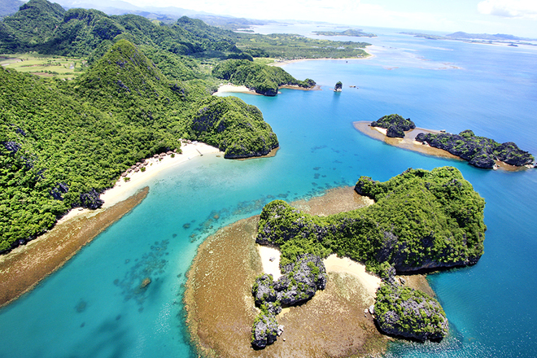

"El-Nido - Palawan"
Located in the famous province of Palawan, El Nido routinely makes it to the top of the prettiest beaches in the world, earning for itself the nickname Heaven on Earth. El Nido is known as the gateway to an archipelago of 45 islets, so why not go an island hopping excursion to explore as many as you can? These tours will take you to lagoons, shrines, beaches, caves, and historical attraction
Why we recommend this beach?
Surrounded by ancient limestone cliffs, the beaches and islands at El Nido resemble a secret adventure, but in reality, this paradise is a world-renowned escape. Apart from being home to the country’s most diverse flora and fauna, El Nido also boasts striking white sand beaches fronting cyan waters.
"Malapascua Island — Cebu"
Malapascua sits on the Visayan Sea north of the island of Cebu and gained massive popularity for its pristine waters, incredibly white sand, and outstanding dive spots. Monad Shoal is Malapascua Island’s top diving site, the only spot in the world where thresher sharks are regularly seen around sunrise.If you want to lengthen your stay in this mini paradise, Malapascua offers an excellent choice of hotels and guesthouses too. Make the most out of this tropical wonder!
Why we recommend this beach?
Surrounded by ancient limestone cliffs, the beaches and islands at El Nido resemble a secret adventure, but in reality, this paradise is a world-renowned escape. Apart from being home to the country’s most diverse flora and fauna, El Nido also boasts striking white sand beaches fronting cyan waters.
"Siargao — Surigao del Norte"
Known as the Surfing Capital of the Philippines, Siargao flaunts great waves and swells any time of year. General Luna Beach tops all the surf spots in Siargao, with a reputation among local and international surfers because of its surfing competitions. For beach bums, head over to Alegria Beach, Doot Beach, or Naked Island.
Why we recommend this beach?
Uninterrupted winds and currents from the Pacific Ocean create Siargao’s popular waves, and the monsoon season enhances the thrill. However, if surfing isn’t your thing, Siargao also has a handful of calmer beaches for beach bumming.
"Southern Negros — Negros Oriental"
Located right next to Cebu, Negros Island is the fourth largest island in the country. The island was originally called Buglas by its natives, but Spaniards renamed it after meeting the dark-skinned Ati natives. Glamping (glamorous camping) is an emerging Instagrammable trend, and some of the best glamping sites in the country are in Southern Negros! Even the magical island of Siquijor has one.
Why we recommend this beach?
Southern Negros belongs to the island’s eastern territory, Negros Oriental, which is chock-full of world-class Filipino beaches. Endless adventures await you here: from a sugar white sand beach and floating hills at Sipalay, coral gardens and turtles at Apo Island, to friendly witches and folklore-rich beaches at Siquijor.

"Caramoan Islands — Camarines Sur"
Dubbed as the Emerging Paradise of the Pacific, Caramoan is composed of 10 islets rich in flora and fauna. Like Palaui, Caramoan was also a filming location for “Survivor”. While Caramoan’s islands all deserve attention, Gota Island has this cute cabin village worth the mention. If you’re looking forward to more than a day’s worth of nature exploration, you can rent a cabin here or camp on other beaches.
Why we recommend this beach?
Boasting 4,000 hectares of limestone forests and stretches of white sand beaches, tranquil lakes, caves, coves, and abundant marine life, Caramoan deserves more recognition. Ocean adventures like kayaking, snorkeling, diving, trekking, hiking, and more make this destination a worthwhile escape.

"Boracay — Aklan"
Yet another world-class Visayan island, Boracay has long been touted by international magazines as one of the best islands in the entire world, longer than Palawan has been recognized. Whichever beach you’re at, stay for the sunset! Boracay’s sky and sea create a landscape akin to Impressionist paintings. After that, Boracay turns into a different playground at night. Native-themed bars and clubs with native-themed drinks come alive in the dark!
Why we recommend this beach?
Boracay Island’s blinding white sand, tempting turquoise waters, and heart-pounding beach activities have been luring millions of tourists every year for generations. From horseback riding, scuba diving, helmet diving, and snorkeling to windsurfing, kiteboarding, cliff diving, and parasailing, Boracay continues to entertain thousands of beachgoers daily.

"Pagudpud — Ilocos Norte"
Pagudpud sits somewhere on the northern tip of the country, taking hours and miles of lush tropical greenery, hills, valleys to reach. Pagudpud faces the open sea, so expect robust winds from time to time. If you’re a surfer, come here from July to September for amazing waves.
Why we recommend this beach?
It is no doubt that Pagudpud is solely for the adventurous, but the long trip rewards you with a dazzling, virginal shoreline that seems to go on forever. Native-themed resorts and windmills populate the municipality, adding an idyllic Filipino charm that makes it hard to leave.
"Coron — Palawan"
Yet another Palawan wonder that routinely makes it to the top beaches and islands in the entire world, Coron is listed in the natural category of the UNESCO World Heritage Tentative List. Coron Island presents you an islet-to-islet adventure whenever you want via boats. Marine parks, snorkeling and diving sites, majestic lagoons, hot springs, and mountain trails are waiting to be discovered!
Why we recommend this beach?
Imagine limestone karst formations, coral reefs, islets and inlets, hot springs, World War II shipwrecks, and transparent blue waters. Time blurs into an illusion in a paradise like Coron. It’s no wonder why it’s one of the most popular beaches in the Philippines.
"Palaui Island — Cagayan"
Home to Ati natives, Palaui Island is an award-winning protected area situated off the northeastern tip of Luzon. The island was featured in the American reality show “Survivor”. Don’t skip visiting the lighthouse! The trail up here is an adventure in itself, and the views at the highest point of the lighthouse are the best. If you want to stay on the island, the Ati’s village has a campsite. Bring your own necessities as the local government forbids anything commercial on this island.
Why we recommend this beach?
Volcanic debris, rolling hills, and untamed tropical greenery embrace the rarely touched beach of Palaui Island. Because of the native landscapes and native population, the colonial lighthouse feels out of place. Sticking out, however, means it attracts curiosity.
"Baler — Aurora"
If you want to stay closer to the capital, the beachside town of Baler is a five-hour drive from Manila. Waves as high as 14 feet dominate Sabang Beach, so expect intermediate surfers hanging out here. Those looking for seclusion and Instagrammable spots can take a trip to Diguisit Beach and Dicasalarin Cove. Baler is also home to the biggest balete tree in Asia and grand waterfalls. You might wanna check those out too.
Why we recommend this beach?
The municipality of Baler is the capital of the province of Aurora and is another popular surfing spot, but minus the crowds in Siargao. Unspoiled and underrated, Baler offers both sensational waves and serene natural areas. So whether you’re here for the thrill or to chill, Baler has something for you.
"Baler — Aurora"
Great Santa Cruz is famous worldwide for being home to one of the rare pink sand beaches in Asia. Come here early! The local government closes the beach at 2 PM as the waters get really rough beyond these hours. Don’t miss the lagoon tours to experience touching the harmless jellyfish and stingrays.
Why we recommend this beach?
Thanks to red organ pipe corals, the white sand beaches at Great Santa Cruz turn pink from red bits that wash ashore. But pink sand, stingless jellyfish, stingless “sting” rays, and fruit bats? Great Santa Cruz assures you a strangely beautiful wonderland surrounded by nature.